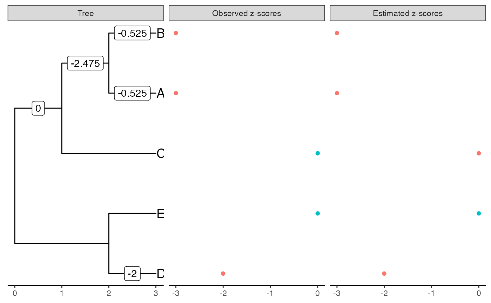
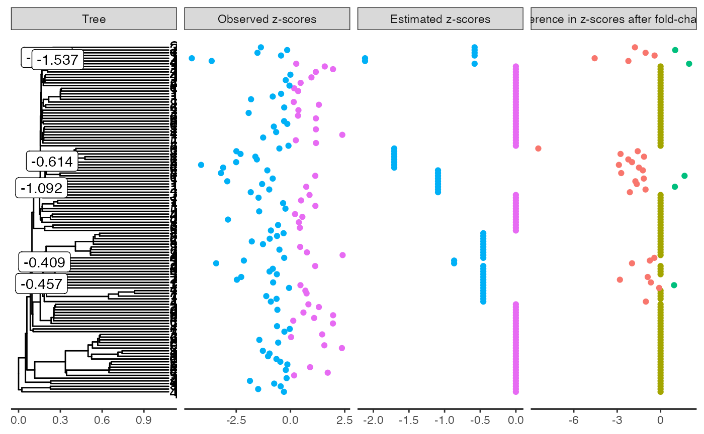
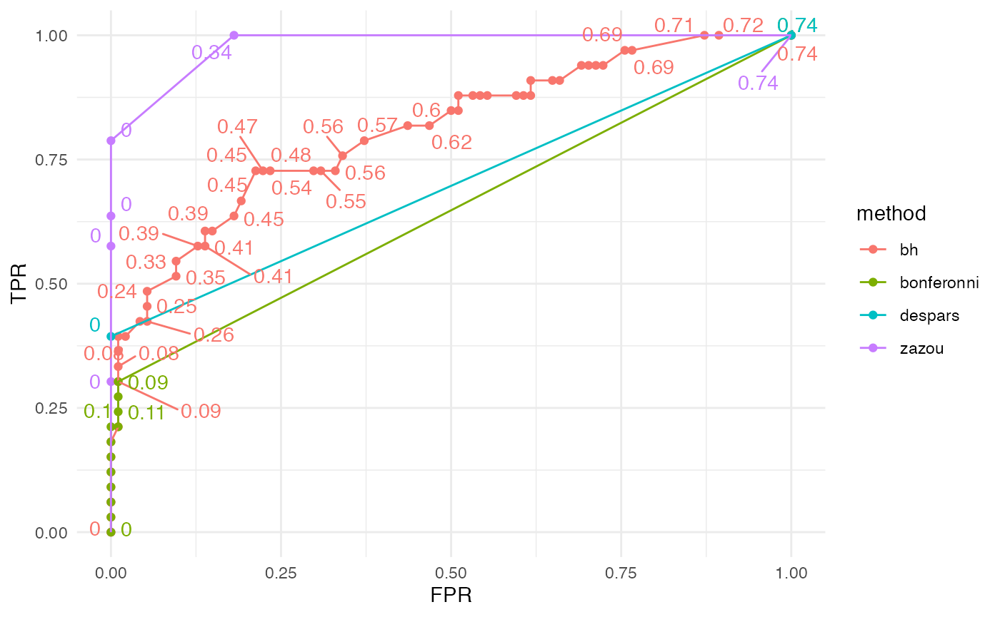

library(ggplot2)
library(ggrepel)
library(tibble)
library(evabic)
library(tictoc)
library(dplyr)
library(tidyr)
library(zazou)
library(purrr)
library(ape)
theme_set(theme_minimal())Deterministic situation
tree <- read.tree(text = "(((A:1,B:1):1,C:2):1,(D:1,E:1):2);")
tree$tip.label
#> [1] "A" "B" "C" "D" "E"
incidence_mat <- incidence_matrix(tree)
incidence_mat + 0
#> [,1] [,2] [,3] [,4] [,5] [,6] [,7] [,8]
#> A 1 1 1 0 0 0 0 0
#> B 1 1 0 1 0 0 0 0
#> C 1 0 0 0 1 0 0 0
#> D 0 0 0 0 0 1 1 0
#> E 0 0 0 0 0 1 0 1
true_shifts <- c(0, -3, 0, 0, 0, 0, -2, 0)
true_zscores <- incidence_mat %*% true_shifts
obs_zscores <- true_zscores <- true_zscores[, 1]
covar_mat <- diag(nrow = 5, ncol = 5)
covarianceOU_matrix(tree, alphaOU = 10^3)
#> A B C D E
#> A 1 0 0 0 0
#> B 0 1 0 0 0
#> C 0 0 1 0 0
#> D 0 0 0 1 0
#> E 0 0 0 0 1
plot_shifts(tree, true_shifts, true_scores = true_zscores)
#> Warning: `data_frame()` was deprecated in tibble 1.1.0.
#> Please use `tibble()` instead.
#> Warning: `mutate_()` was deprecated in dplyr 0.7.0.
#> Please use `mutate()` instead.
#> See vignette('programming') for more help
#> Warning: Removed 7 rows containing missing values (geom_label).
estimation <- estimate_shifts(zscores = obs_zscores,
tree = tree, alphaOU = 10^3, lambda = 0)
estimation
#> Tree is binary with 5 leafs and 8 branches
#> Covariance matrix has been estimated from an OU with alpha = 1000 and sigma = 44.721
#> ---
#> Method: lasso
#> Regularization parameter: lambda = 0
#> Objective value: 0
#> BIC: 13.019
#> pBIC: -Inf
#> ---
#> Estimated shifts: 0 -2.475 -0.525 -0.525 0 0 -2 0 ...
#> 5 shifts have been identified (ie 37.5 % of sparsity)
#> A parsimonious solution would involve 3 shifts
#> ---
#> Observed z-scores: -3 -3 0 -2 0
#> Estimated z-scores: -3 -3 0 -2 0
#> 4 z-scores have been shifted (ie 20 % of sparsity)
plot(estimation)
#> Warning: Removed 4 rows containing missing values (geom_label).
Solution without penalty is not sparse due to ill-conditioning of the incidence matrix.
estimation <- estimate_shifts(zscores = obs_zscores,
tree = tree, alphaOU = 10^3, lambda = 2)
estimation
#> Tree is binary with 5 leafs and 8 branches
#> Covariance matrix has been estimated from an OU with alpha = 1000 and sigma = 44.721
#> ---
#> Method: lasso
#> Regularization parameter: lambda = 2
#> Objective value: 7
#> BIC: 15.955
#> pBIC: 23.826
#> ---
#> Estimated shifts: 0 -2 0 0 0 0 0 0 ...
#> 1 shifts have been identified (ie 87.5 % of sparsity)
#> A parsimonious solution would involve 1 shifts
#> ---
#> Observed z-scores: -3 -3 0 -2 0
#> Estimated z-scores: -2 -2 0 0 0
#> 2 z-scores have been shifted (ie 60 % of sparsity)
plot(estimation)
#> Warning: Removed 8 rows containing missing values (geom_label).
With a low penalty, the solution is much sparser and closer to the true shifts on branches.
Simulations on a toy example
tree <- read.tree(text = "(((A:1,B:1):1,C:2):1,(D:1,E:1):2);")
set.seed(2019)
covar_mat <- covarianceOU_matrix(tree, alphaOU = 1)
corrplot::corrplot(covar_mat, type = "upper")
true_shifts <- c(-3, -3, 0, -2, 0)
sqrtcovar <- t(chol(covar_mat))
zscores <- true_shifts + sqrtcovar %*% rnorm(5) # simulate
zscores <- zscores[, 1]
zscores
#> A B C D E
#> -2.261477 -3.411813 -1.635239 -1.083963 -1.134186Estimate shifts without penalty
The fit is perfect since all observed \(z\)-scores are negative.
estimation <- estimate_shifts(zscores = zscores,
tree = tree, alphaOU = 1, lambda = 0)
estimation
#> Tree is binary with 5 leafs and 8 branches
#> Covariance matrix has been estimated from an OU with alpha = 1 and sigma = 1.418
#> ---
#> Method: lasso
#> Regularization parameter: lambda = 0
#> Objective value: 0
#> BIC: 14.514
#> pBIC: -Inf
#> ---
#> Estimated shifts: -0.452 -1.809 0 -1.15 -1.183 -0.615 -0.469 -0.519 ...
#> 7 shifts have been identified (ie 12.5 % of sparsity)
#> A parsimonious solution would involve 4 shifts
#> ---
#> Observed z-scores: -2.261 -3.412 -1.635 -1.084 -1.134
#> Estimated z-scores: -2.261 -3.412 -1.635 -1.084 -1.134
#> 5 z-scores have been shifted (ie 0 % of sparsity)
plot(estimation, true_scores = true_shifts)
#> Warning: Removed 2 rows containing missing values (geom_label).
round(data.frame(true = true_shifts, observed = zscores,
estimated = estimation$zscores_est),
digits = 4)
#> true observed estimated
#> A -3 -2.2615 -2.2615
#> B -3 -3.4118 -3.4118
#> C 0 -1.6352 -1.6352
#> D -2 -1.0840 -1.0840
#> E 0 -1.1342 -1.1342The fit degrades as we increase sparsity. [Well, not so much…]
estimation <- estimate_shifts(zscores = zscores,
tree = tree, alphaOU = 1, lambda = 0.1)
estimation
#> Tree is binary with 5 leafs and 8 branches
#> Covariance matrix has been estimated from an OU with alpha = 1 and sigma = 1.418
#> ---
#> Method: lasso
#> Regularization parameter: lambda = 0.1
#> Objective value: 0.445
#> BIC: 12.234
#> pBIC: 28.273
#> ---
#> Estimated shifts: -1.634 -0.615 0 -1.064 0 -1.052 0 0 ...
#> 4 shifts have been identified (ie 50 % of sparsity)
#> A parsimonious solution would involve 3 shifts
#> ---
#> Observed z-scores: -2.261 -3.412 -1.635 -1.084 -1.134
#> Estimated z-scores: -2.248 -3.312 -1.634 -1.052 -1.052
#> 5 z-scores have been shifted (ie 0 % of sparsity)
plot(estimation, true_scores = true_shifts)
#> Warning: Removed 5 rows containing missing values (geom_label).
round(data.frame(true = true_shifts, observed = zscores,
estimated = estimation$zscores_est),
digits = 4)
#> true observed estimated
#> A -3 -2.2615 -2.2482
#> B -3 -3.4118 -3.3118
#> C 0 -1.6352 -1.6336
#> D -2 -1.0840 -1.0524
#> E 0 -1.1342 -1.0524The fit does not depend a lot (on this toy example) on the initial solution.
estimation <- estimate_shifts(zscores = zscores, tree = tree,
beta0 = c(0, -3, 0, 0, 0, 0, -2, 0),
alphaOU = 1, lambda = 0.1)
estimation
#> Tree is binary with 5 leafs and 8 branches
#> Covariance matrix has been estimated from an OU with alpha = 1 and sigma = 1.418
#> ---
#> Method: lasso
#> Regularization parameter: lambda = 0.1
#> Objective value: 0.445
#> BIC: 12.234
#> pBIC: 28.273
#> ---
#> Estimated shifts: -1.634 -0.615 0 -1.064 0 -1.052 0 0 ...
#> 4 shifts have been identified (ie 50 % of sparsity)
#> A parsimonious solution would involve 3 shifts
#> ---
#> Observed z-scores: -2.261 -3.412 -1.635 -1.084 -1.134
#> Estimated z-scores: -2.248 -3.312 -1.634 -1.052 -1.052
#> 5 z-scores have been shifted (ie 0 % of sparsity)
plot(estimation, true_scores = true_shifts)
#> Warning: Removed 5 rows containing missing values (geom_label).
round(data.frame(true = true_shifts, observed = zscores,
estimated = estimation$zscores_est),
digits = 4)
#> true observed estimated
#> A -3 -2.2615 -2.2482
#> B -3 -3.4118 -3.3118
#> C 0 -1.6352 -1.6336
#> D -2 -1.0840 -1.0524
#> E 0 -1.1342 -1.0524Simulations from real data
set.seed(42)
data(alcohol)
abund <- alcohol$X[, alcohol$Y == "Low"]
groups <- sample(c("A", "B"), size = ncol(abund), replace = TRUE)
tree <- force_ultrametric(alcohol$tree)
otu_to_keep <- names(which(rowSums(abund > 0) > 20))
abund <- abund[otu_to_keep, ]
tree <- drop.tip(tree, setdiff(tree$tip.label, otu_to_keep))
N_branch <- length(tree$edge.length)
pvalues_original <- test_wilcoxon(abund, groups)$p.value
zscores_original <- p2z(pvalues_original)
plot_shifts(tree, shifts = NA, obs_scores = zscores_original)
#> Warning: Removed 253 rows containing missing values (geom_label).
clustering <- create_clusters(tree, N_clusters = 20, method = "paraphyletic")
clusters <- sample(10, 4)
table(clustering[which(clustering %in% clusters)])
#>
#> 2 4 5 8
#> 7 9 8 9
otus_da <- names(clustering[which(clustering %in% clusters)])
pi0 <- 1 - length(otus_da) / length(otu_to_keep)
abund[otus_da, groups == "B"] <- 4 * abund[otus_da, groups == "B"]
pvalues <- test_wilcoxon(abund, groups)$p.value
zscores <- p2z(pvalues)
plot_shifts(tree, NA, obs_scores = zscores,
sup_scores = list(list(scores = clustering,
title = "Clusters",
color = as.character(clustering)),
list(scores = zscores - zscores_original,
title = "Difference in z-scores after fold-change",
color = as.character(sign(zscores - zscores_original)))))
#> Warning: Removed 253 rows containing missing values (geom_label).
tic()
estimation_shooting <- estimate_shifts(zscores = zscores,
tree = tree, alphaOU = c(0.2, 0.5, 1, 2, 5),
method = "lasso", constraint_type = "beta")
estimation_scla <- estimate_shifts(zscores = zscores,
tree = tree, alphaOU = c(0.2, 0.5, 1, 2, 5),
method = "scaled lasso", constraint_type = "beta")
confint_scoresystem <- estimate_confint(estimation_scla, method = "score system")
toc()
#> 120.753 sec elapsed
estimation_shooting
#> Tree is binary with 127 leafs and 252 branches
#> Covariance matrix has been estimated from an OU with alpha = 2 and sigma = 2.027
#> ---
#> Method: lasso with model selection
#> Regularization parameter: lambda = 3.878
#> Objective value: 100.604
#> BIC: 442.595
#> pBIC: 486.063
#> ---
#> Estimated shifts: 0 0 0 0 0 0 0 0 0 0 ...
#> 6 shifts have been identified (ie 97.6 % of sparsity)
#> A parsimonious solution would involve 6 shifts
#> ---
#> Observed z-scores: 1.58 -0.434 -0.152 -1.363 -1.521 -3.632 -4.547 0.266 1.167 1.959 ...
#> Estimated z-scores: 0 -0.579 -0.579 -0.579 -0.579 -2.116 -2.116 -0.579 0 0 ...
#> 50 z-scores have been shifted (ie 60.6 % of sparsity)
estimation_scla
#> Tree is binary with 127 leafs and 252 branches
#> Covariance matrix has been estimated from an OU with alpha = 1 and sigma = 1.6
#> ---
#> Method: scaled lasso with model selection
#> Regularization parameter: lambda = 14.202
#> Objective value: 1.367
#> BIC: 463.381
#> pBIC: 473.069
#> ---
#> Estimated shifts: 0 0 0 0 0 0 0 0 0 0 ...
#> 0 shifts have been identified (ie 100 % of sparsity)
#> A parsimonious solution would involve 0 shifts
#> ---
#> Observed z-scores: 1.58 -0.434 -0.152 -1.363 -1.521 -3.632 -4.547 0.266 1.167 1.959 ...
#> Estimated z-scores: 0 0 0 0 0 0 0 0 0 0 ...
#> 0 z-scores have been shifted (ie 100 % of sparsity)
confint_scoresystem
#> Tree is binary with 127 leafs and 252 branches
#> Method: score system
#> Confidence threshold: 0.05
#> ---
#> z-scores:
#> leaf estimate lower upper pvalue qvalue
#> 1 283 1.503942 -8.015409 11.0232936 0.6215866 1.0000000
#> 2 16688 -2.284907 -13.268161 8.6983473 0.3417315 0.9475903
#> 3 3494 -2.894828 -16.030329 10.2406728 0.3328922 0.9230797
#> 4 3470 -4.141860 -17.267166 8.9834456 0.2681255 0.7434876
#> 5 1661 -3.976428 -15.897790 7.9449336 0.2566347 0.7116245
#> 6 4206 -11.137879 -23.180958 0.9051999 0.0349432 0.0968943
#> ...
plot(estimation_shooting,
sup_scores = list(list(scores = zscores - zscores_original,
title = "Difference in z-scores after fold-change",
color = as.character(sign(zscores - zscores_original)))))
#> Warning: Removed 247 rows containing missing values (geom_label).
plot(estimation_scla,
sup_scores = list(list(scores = zscores - zscores_original,
title = "Difference in z-scores after fold-change",
color = as.character(sign(zscores - zscores_original)))))
#> Warning: Removed 253 rows containing missing values (geom_label).
plot(confint_scoresystem)
#> Warning: Removed 1 rows containing missing values (geom_label).
estimation_shooting$optim_info$bic_selection %>%
mutate(n_shifts = map_dbl(shifts_est, ~ sum(. != 0))) %>%
select(-shifts_est)
#> alphaOU lambda objective_value bic pbic n_shifts
#> 1 0.2 11.5895510 128.36596 473.5429 489.4348 1
#> 2 0.2 6.9477533 126.23872 476.7007 508.8961 4
#> 3 0.2 4.1650687 118.86070 480.6829 537.4866 9
#> 4 0.2 2.4968931 107.43405 491.5117 576.2426 15
#> 5 0.2 1.4968481 92.77746 570.4857 723.8583 31
#> 6 0.2 0.8973368 75.67515 746.4313 1017.1727 59
#> 7 0.2 0.5379393 58.66125 892.0613 1256.0145 82
#> 8 0.2 0.3224861 43.60607 935.0813 1331.7138 90
#> 9 0.2 0.1933254 32.25687 981.1074 1403.2901 97
#> 10 0.2 0.1158955 24.52081 1008.7379 1445.1972 101
#> 11 0.5 12.4598888 123.08493 469.1349 485.0934 1
#> 12 0.5 7.4695071 121.03595 476.7769 509.1510 4
#> 13 0.5 4.4778519 114.26468 458.7085 501.0034 6
#> 14 0.5 2.6844017 104.13248 466.1208 532.0346 11
#> 15 0.5 1.6092565 91.26661 557.3735 697.3856 28
#> 16 0.5 0.9647239 75.69281 697.1161 931.4361 51
#> 17 0.5 0.5783368 59.86505 873.9918 1217.6538 78
#> 18 0.5 0.3467038 45.40804 938.4763 1325.0351 89
#> 19 0.5 0.2078435 34.17908 991.4674 1408.6244 97
#> 20 0.5 0.1245989 26.40135 995.8549 1416.0168 98
#> 21 1.0 14.2023143 118.62973 466.6214 482.7019 1
#> 22 1.0 8.5140638 116.26040 468.5370 496.8195 3
#> 23 1.0 5.1040471 110.23410 452.4898 490.5022 5
#> 24 1.0 3.0597959 101.16245 458.7620 515.6939 9
#> 25 1.0 1.8342994 90.21485 518.7996 629.3401 21
#> 26 1.0 1.0996336 76.56009 628.6918 814.0868 40
#> 27 1.0 0.6592130 62.33575 784.8986 1066.5435 64
#> 28 1.0 0.3951878 48.87168 924.4104 1290.6069 85
#> 29 1.0 0.2369089 37.87408 960.5030 1346.4957 91
#> 30 1.0 0.1420231 30.08167 972.1547 1366.2605 93
#> 31 2.0 18.0004476 118.98448 475.9380 500.2776 2
#> 32 2.0 10.7909848 115.12024 459.8105 484.1501 2
#> 33 2.0 6.4690254 109.35668 466.5630 513.2005 6
#> 34 2.0 3.8780789 100.60392 442.5946 486.0634 6
#> 35 2.0 2.3248472 91.11725 481.7103 563.4297 14
#> 36 2.0 1.3937093 79.87367 534.4095 660.5086 25
#> 37 2.0 0.8355068 67.32071 639.1021 830.2473 42
#> 38 2.0 0.5008731 55.37545 779.1295 1050.6172 63
#> 39 2.0 0.3002656 45.04711 837.2287 1142.4234 72
#> 40 2.0 0.1800045 37.47415 878.5927 1207.6319 78
#> 41 5.0 21.6884593 123.05421 493.0978 529.7452 4
#> 42 5.0 13.0018897 117.42555 475.2926 511.9400 4
#> 43 5.0 7.7944281 111.24370 472.7734 522.9567 6
#> 44 5.0 4.6726369 102.69698 456.3961 508.4488 7
#> 45 5.0 2.8011722 93.26520 466.9586 538.1841 11
#> 46 5.0 1.6792586 83.16735 509.6734 617.5517 20
#> 47 5.0 1.0066891 71.63576 598.9791 764.1025 35
#> 48 5.0 0.6034943 60.45821 748.5908 997.3125 57
#> 49 5.0 0.3617853 50.72128 752.4358 1005.9031 59
#> 50 5.0 0.2168846 43.45897 831.7312 1126.5051 70
data.frame(punct_scla = estimation_scla$shifts_est,
punct_scoresystem = confint_scoresystem$shifts_est$estimate) %>%
ggplot() +
aes(punct_scla, punct_scoresystem) +
geom_point()
data.frame(punct_scla = estimation_scla$zscores_est,
punct_scoresystem = confint_scoresystem$zscores_est$estimate) %>%
ggplot() +
aes(punct_scla, punct_scoresystem) +
geom_point()
detected_sh <- names(which(estimation_shooting$zscores_est != 0))
pvalues_bh <- p.adjust(pvalues, method = "BH")
detected_bh <- names(which(pvalues_bh < 0.05))
pvalues_bonf <- p.adjust(pvalues, method = "bonferroni")
detected_bonf <- names(which(pvalues_bonf < 0.05))
mm <- c("TPR", "FPR", "FDR", "ACC", "F1", "BACC")
ebc_tidy(detected_sh, otus_da, m = length(otu_to_keep), measures = mm)
#> TPR FPR FDR ACC F1 BACC
#> 1 1 0.1808511 0.34 0.8661417 0.7951807 0.9095745
ebc_tidy(detected_bh, otus_da, m = length(otu_to_keep), measures = mm)
#> TPR FPR FDR ACC F1 BACC
#> 1 0.2121212 0.0106383 0.125 0.7874016 0.3414634 0.6007415
ebc_tidy(detected_bonf, otus_da, m = length(otu_to_keep), measures = mm)
#> TPR FPR FDR ACC F1 BACC
#> 1 0.1212121 0 0 0.7716535 0.2162162 0.5606061
ebc_tidy(c(), otus_da, m = length(otu_to_keep), measures = mm)
#> TPR FPR FDR ACC F1 BACC
#> 1 0 0 NaN 0.7401575 0 0.5
ebc_tidy(otu_to_keep, otus_da, m = length(otu_to_keep), measures = mm)
#> TPR FPR FDR ACC F1 BACC
#> 1 1 1 0.7401575 0.2598425 0.4125 0.5
map_dfr(list(detected_sh, detected_bh, detected_bonf, c(), otu_to_keep), ebc_tidy,
detected = otus_da, m = length(otu_to_keep), measures = mm) %>%
mutate(method = c("zazou", "bh", "bonf", "nothing", "everything")) %>%
select(method, everything())
#> method TPR FPR FDR ACC F1 BACC
#> 1...1 zazou 0.6600000 0.0000000 0.0000000 0.8661417 0.7951807 0.8300000
#> 1...2 bh 0.8750000 0.2184874 0.7878788 0.7874016 0.3414634 0.8282563
#> 1...3 bonf 1.0000000 0.2357724 0.8787879 0.7716535 0.2162162 0.8821138
#> 1...4 nothing NaN 0.2598425 1.0000000 0.7401575 0.0000000 NaN
#> 1...5 everything 0.2598425 NaN 0.0000000 0.2598425 0.4125000 NaN
plot(estimation_shooting,
sup_scores = list(list(scores = zscores - zscores_original,
title = "Difference in z-scores after fold-change",
color = as.character(sign(zscores - zscores_original))),
list(scores = pvalues_bh, title = "Detected by BH",
color = pvalues_bh < 0.05),
list(scores = pvalues_bonf, title = "Detected by Bonferroni",
color = pvalues_bonf < 0.05)))
#> Warning: Removed 247 rows containing missing values (geom_label).
df_measures_zazou <-
estimation_shooting$zscores_est %>%
ebc_tidy_by_threshold(true = otus_da,
m = length(otu_to_keep), measures = mm) %>%
mutate(method = "zazou")
df_measures_bh <-
ebc_tidy_by_threshold(pvalues_bh, true = otus_da,
m = length(otu_to_keep), measures = mm) %>%
mutate(method = "bh")
df_measures_bonf <-
ebc_tidy_by_threshold(pvalues_bonf, true = otus_da,
m = length(otu_to_keep), measures = mm) %>%
mutate(method = "bonferonni")
df_measures <- rbind(df_measures_zazou, df_measures_bh, df_measures_bonf)
df_measures %>%
arrange(FPR, TPR) %>%
ggplot() +
aes(x = FPR, y = TPR, color = method) +
geom_point() +
geom_line()
estimation_shooting$zscores_est %>%
ebc_AUC(true = otus_da, m = length(otu_to_keep))
#> [1] 0.9808188
ebc_AUC(pvalues_bh, true = otus_da, m = length(otu_to_keep))
#> [1] 0.8083495
ebc_AUC(pvalues_bonf, true = otus_da, m = length(otu_to_keep))
#> [1] 0.6468407
several_confint <-
seq(from = 0, to = 1, by = 0.01) %>%
enframe(value = "level", name = NULL) %>%
mutate(model = map(level, update_confint, x = confint_scoresystem),
da_species = map(model, extract_significant_leaves, side = "left"),
N = map_dbl(.data$da_species, length)) %>%
group_split(N) %>%
map(head, 1) %>%
reduce(bind_rows) %>%
select(-N) %>%
add_row(level = Inf, model = list(NULL), da_species = list(otu_to_keep)) %>%
mutate(nested_measures = map(da_species, ebc_tidy,
true = .env$otus_da, m = length(otu_to_keep))) %>%
unnest(nested_measures) %>%
mutate(method = "despars")
#> t_star is not feasible, falling back to default value.
#> t_star is not feasible, falling back to default value.
#> t_star is not feasible, falling back to default value.
#> t_star is not feasible, falling back to default value.
#> t_star is not feasible, falling back to default value.
#> t_star is not feasible, falling back to default value.
several_confint
#> # A tibble: 2 × 9
#> level model da_species TPR FPR FDR ACC F1 method
#> <dbl> <list> <list> <dbl> <dbl> <dbl> <dbl> <dbl> <chr>
#> 1 0 <shiftcnf> <chr [13]> 0.394 0 0 0.843 0.565 despars
#> 2 Inf <NULL> <chr [127]> 1 1 0.740 0.260 0.412 despars
evabic::ebc_AUC_from_measures(several_confint)
#> [1] 0.6969697
all_measures <-
df_measures %>%
select(level = threshold, TPR:method) %>%
bind_rows(select(several_confint, -model, -da_species))
all_measures %>%
group_by(method) %>%
summarise(AUC = evabic:::area_rect(FPR, TPR))
#> # A tibble: 4 × 2
#> method AUC
#> <chr> <dbl>
#> 1 bh 0.808
#> 2 bonferonni 0.647
#> 3 despars 0.697
#> 4 zazou 0.981
ggplot(all_measures) +
aes(x = FPR, y = TPR, color = method) +
geom_point() +
geom_line() +
geom_text_repel(aes(label = round(FDR, 2)), show.legend = FALSE)
#> Warning: Removed 3 rows containing missing values (geom_text_repel).
#> Warning: ggrepel: 33 unlabeled data points (too many overlaps). Consider
#> increasing max.overlaps
ggplot(all_measures) +
aes(x = level, y = FDR, color = method) +
geom_point() +
geom_line() +
geom_abline(slope = pi0, intercept = 0) +
facet_grid(cols = vars(method), scales = "free_x")
#> Warning: Removed 3 rows containing missing values (geom_point).
#> Warning: Removed 3 row(s) containing missing values (geom_path).